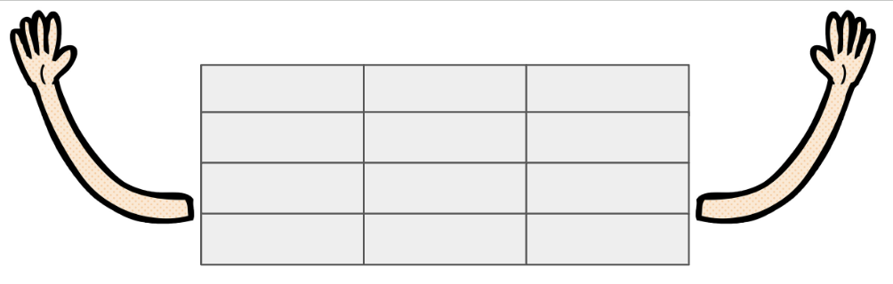

Help, my data doesn't fit into my dataframe!
TL;DR: Check out Akimbo and give it a go, let me know what you think!

(logo is not official)
Tables and dataframes are everywhere. If you start any course about data (-engineering,
-science, -analysis, ...), it's almost all exclusively devoted to them, whether
in the common pandas form (and MANY friends) to begin with (e.g., from CSV files) or normalised
to tabular form as the first step (e.g., see the ingestion tool dbt).
If you really have nested records-in-records and variable-length lists - "generalised JSON" - then in python, you end up either with a big for-loop, or explode out your data to fit the table model. The first of these solutions creates python objects at every stage and so is way too slow for non-trivial data sized. The second solution does allow for fast vectorised processing, but literally explodes memory use and looses the structure inherent in the original data.
However, parquet and arrow support the full complexity of nested data, and arrow backs
your dataframes (optional in pandas, but, in practice, taking over). So all we lack,
is a convenient API to act on nested data in a sensible, understandable way.
So now you can use akimbo from your favourite dataframe library. If you already have
nested data (e.g., in parquet or JSON format) which you previously had to flatten/explode or
process iteratively, you can try akimbo.
Or maybe you were put off from even trying to
handle such data, see the list of possible sources, below.
Currently we support pandas, polars, cudf and dask.dataframe, with integrations with pyspark and daft in preliminary stages.
I won't repeat what the documentation says, but encourage people to try it out and share thoughts. These are early days, and we have the chance to bring nested vectorised compute in python to a wide list of dataframe workflows.
Akimbo is not just for science!
Here are some broad categories and a few more specific examples of where I expect to
find interesting data. However, I probably have a blinkered view here! This is why
akimbo wants you to get involved and share your ideas and suggestions.
DB tables with relationships
In cases Where you might think about your data as an ORM structure (i.e., records have children, whose details come from other tables). If these include variable-length relationships (one-to-many), and a large enough number of records that python loops would get slow, and compute processes that are hard to phrase is SQL, or if the "tables" are in separate datasets without a DB engine.
Simply reading the whole merged table ("exploded view") is likely much slower in transfer, memory use and processing speed, and this is the point. In fact, if you already have an exploded table, using groupby to form it back into lists-of-structs may well be worthwhile for the storage and memory savings.
Sensor Data
Real physical devices generally do not produce tabular data. They may have time-series (one-dimensional variable-length) readings or even deeper structured output. Within computer hardware, or real physical sensors or any IoT device, there is a huge amount of such data around.
Server logs
Servers generally output some text for all the connections they receive, or possibly formatted line-delimited JSON/XML. In the common case, these logs can be broken down into types or connection and probably "sessions", which join with known user information. These are all record-oriented data types, and the sessions naturally have variable number of entries. Furthermore, common data types like IP addresses need to be parsed and operated on in type-specific ways.
Timeseries, e.g., finance
Business problems are full of time-series data. One well-studied instance of this is finance, where (for example) stocks are bid on at various exchanges as a function of time. A variable number of bids are received per exchange and per stock symbol, and each bid contains various extra fields (origin, price, quantity). It is very common to flatten this data for the purposes of graphing (min/max per time bin, for example), but that looses the detail of the data, which should be important for training real-time systems.
Science
The original inspiration for awkward-array was the field of high-energy physics: each
particle collision gives rise to a cascade of variable numbers of different particle types, each
of which have different measuable characteristics. Each "row" (or event) is a node with a large
tree of descendent objects, therefore, and something that fits very naturally into the
arrow-like data structure that akimbo is concerned with. However, they are not normally
analysed using dataframe tools, since very specific analysis workflows are built directly
on awkward (and dask-awkward).
Another approach to nested data in dataframes can be found with
nested-pandas, built for analysing
time series of astronomical measurements. In this case, this is a
cross-match/join way to build the data structure, one level deep, but each sub-structure is
in fact a potentially quite large time-series of measurements. The difference here, is that
the child timeseries dataframes are big enough, that looping over them does not add
significant overhead. We are hoping to prove that akimbo can do everything that
the more specialised nested-pandas can do, without worse performance. This is a work
in progress.
Making great use-case examples (please help!).
Solidifying cuDF integration (since it doesn't use real arrow structures or kernels).
Working in geo datatypes (polygons, points) and simpler algorithms, perhaps the set of numba functions in spatialpandas which are already numba ready, or those from geoarrow-rust.
other specialised data types beyond the POC ip integration and physics-specific vector objects?
daft and pyspark integration (some experimental work has been started)
interoperability with graph/sparse libraries?
other file formats like XML? We can already integrate any that the arrow ecosystem supports (feather, lance, delta/berg, etc.)